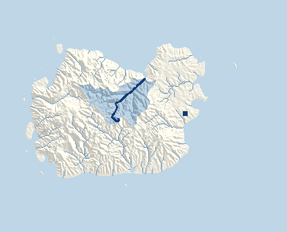

Vokila (river)
River of Lisavu
 | |
| Country | Lisavu |
|---|---|
| Length | 44 km |
| Basin | 818 km² |
| Source | about 1,175 m |
| Mouth | the sea |
The Vokila is a river of Lisavu, 44 km long, with a basin of 818 km². It rises at about 1,175 m and reaches the sea on the north coast at Natahoma. Its Lisavan name means canoe.
On the river
From the source down to the mouth: Natahoma.